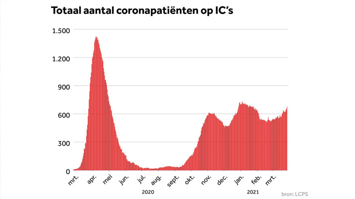

10.000ste covidpatiënt opgenomen op de intensive care
De intensive care van het Maastricht UMC+
Ruim een jaar na het begin van de corona-epidemie wordt vandaag de 10.000ste covidpatiënt opgenomen op een intensivecareafdeling van een Nederlands ziekenhuis. Dat meldt de stichting NICE, die samen met de afdeling klinische informatiekunde van het Amsterdam UMC de gegevens van de IC's verzamelt en analyseert.
De stichting spreekt van "een trieste mijlpaal". Tot op heden zijn 2725 van deze patiënten overleden op de IC. Het gemiddelde sterftepercentage is zo'n 30 procent. Ter vergelijking: op de verpleegafdelingen was dat in januari en februari 15,5 procent. Dat is weer iets hoger dan in het najaar.
De 73-jarige Jan de Gelder is een van de 10.000 coronapatiënten die op de intensive care belandde:
Jan (73) belandde met corona, een herseninfarct en twee longembolieën op de IC
Momenteel neemt de druk op de ziekenhuizen weer toe; gemiddeld zijn er nu volgens NICE 55 IC-opnames per dag. Vorige week werd besloten het aantal IC-bedden op te hogen, van 1350 naar 1450. "Het is deze pandemie pijnlijk duidelijk geworden dat IC-zorg een schaars goed is", zegt de voorzitter van de stichting NICE, intensivist Dave Dongelmans van het Amsterdam UMC.
Ligduur steeds korter
De covidpatiënten maken zeker niet het grootste deel van de IC-opnames uit. In normale jaren worden in totaal tussen de 75.000 en 80.000 opgenomen op de intensive care.
Belangrijk verschil is wel dat de ligduur bij covid aanzienlijk langer is. Waar een andere patiënt gemiddeld 2,5 dagen in een IC-bed ligt, was dat bij de mensen die waren getroffen door corona aanvankelijk bijna 21 dagen. Inmiddels is dat teruggebracht tot 16,6 dagen en mogelijk daalt het nog verder naar 15,6 in de eerste twee maanden van dit jaar.
Volgens Dongelmans is er een reeks aan oorzaken voor de kortere ligduur. Die variëren van het gebruik van medicatie als ontstekingsremmers en antistollingsmiddelen tot meer geavanceerde vormen van zuurstoftoediening op verpleegafdelingen, waardoor patiënten minder snel naar de IC hoeven.
Hij benadrukt dat de laatste golven in de ziekenhuizen hoger waren geweest als die er niet in waren geslaagd de behandelduur te verkorten. "We hebben nu een kleine 700 covidpatiënten op de IC's. Dat waren er volgens modelberekeningen anders 150 tot 200 meer geweest."
Gemiddelde leeftijd 63
De gemiddelde leeftijd op de IC's van de eerste 10.000 covidpatiënten is volgens de NICE-data 63 jaar. Ongeveer een derde is jonger dan 60 en iets meer dan 10 procent jonger dan 50 jaar.
Dongelmans: "Het is daarbij goed te realiseren dat de kans op overleving sterk daalt met het stijgen van de leeftijd. Van de patiënten tussen 65 en 70 overleeft 60 procent, terwijl in de groep van 80 tot 85 juist 60 procent overlijdt." De verwachting is dat die groepen oudere patiënten dit voorjaar steeds minder in het ziekenhuizen terecht zullen komen, naarmate het vaccinatieprogramma meer vaart maakt.
Nog altijd zijn iets meer dan zeven op de tien covidpatiënten man, zonder dat precies duidelijk is hoe dat komt. Ook onveranderd: bijna vier op de vijf patiënten hebben iets tot veel overgewicht.